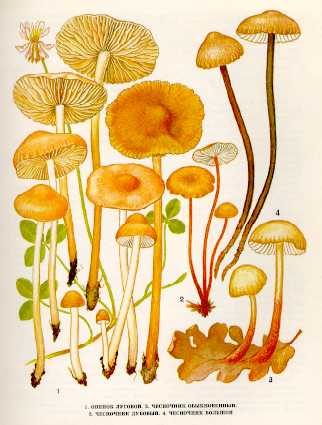

1. ОПЕНОК ЛУГОВОЙ. ЛУГОВИК
Растет на дерновой почве на лугах, выгонах, пастбищах, в лесу, на полянах, опушках, вдоль дорог. Появляется в конце мая.
Шляпка желтого цвета, небольшого размера, 3-
Ножка 4-
Гриб съедобный и очень
вкусный. Его можно варить, сушить, солить и мариновать.
2. ЧЕСНОЧНИК ОБЫКНОВЕННЫЙ.
Растет на опавшей хвое, у основания стволов и
пней хвойных деревьев, а также на ветках и сучьях, погруженных в почву, с июля по
октябрь.
Шляпка 1—3 см в диаметре, сначала выпуклая, затем
распростертая, иногда с бугорком, рыжевато-коричневая, выцветающая, суховатая.Мякоть тонкая, беловатая,
пахнет чесноком, с грибным вкусом.
Пластинки приросшие к ножке или свободные, белые или кремовые, частые,
узкие. Споровый порошок белый. Споры удлиненные, ланцетовидные, гладкие.
Ножка 3—6 см длины, 0,1 —
Съедобный гриб четвертой категории. Употребляется свежим, пригоден для сушки. При переработке не теряет запаха.
3. ЧЕСНОЧНИК ДУБОВЫЙ.
Встречается в дубравах и смешанных лесах. Растет
на опавших дубовых листьях с августа по октябрь.
Шляпка до
Пластинки слабоприросшие
к ножке, частые, у молодых грибов белые, у зрелых — палевые.
Споровый порошок белый. Споры яйцевидные, неравнобокие.
Ножка до
Малоизвестный съедобный гриб. Употребляется свежим, маринованным.
4. ЧЕСНОЧНИК БОЛЬШОЙ.
Растет в лесах на опавших листьях и около пней.
Встречается часто, большими группами со второй декады июня до октября.
Шляпка до
Пластинки сначала приросшие к ножке, затем свободные, редкие,
беловатые. Споровый порошок белый. Споры удлиненно-яйцевидные,
неравнобокие.
Ножка до
Малоизвестный съедобный гриб. Употребляется свежим и сушеным в качестве
приправы вместо лука и чеснока .